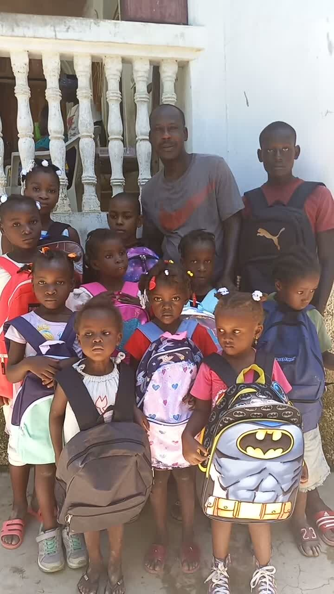

Our story
From one family's loss to a movement built on dignity
Diane died at just three months old because the healthcare she needed was not available. Her father, Wilner Frage, turned that grief into a lifelong promise — and a foundation.

Wilner Frage, founder, on the porch where Backpack Day happens each year.
In Diane's memory
Her life was brief. Her legacy is action.
Diane's life was only three months long. She died because the healthcare she needed was not accessible. Her loss is heartbreaking — but her legacy is one of action.
The Diane & Wilner Foundation was created so that more children can receive life-saving care, stay healthy enough to learn, and have the opportunity to grow into the future they deserve. We believe healthcare is not a privilege. Education is not a luxury. Together, they give children the chance to live, learn, and thrive.
"Diane's life changed mine forever. I created this foundation in her memory and for every child whose potential is threatened by a lack of healthcare or educational opportunity. When we care for a child's health and invest in their education, we invest in an entire future." — Wilner Frage, Founder
Mission
To rebuild safe homes and strengthen orphanage care, and to give children in Haiti and the diaspora the medical support and education they need to grow with dignity.
Vision
A generation of Haitian children raised in safe homes, in good health, and in classrooms — sustained by a diaspora that gives with trust.
Our differentiator
Diaspora-led and locally connected — a bridge between people with resources and children who need stability, led by a founder who has already proven his commitment with his own money.
What guides us
Our values
Dignity first
We tell stories of hope, never of pity. The children we serve are not an audience to market to — they are the reason the foundation exists.
Transparency
Every gift is traceable to its outcome. We fund restoration, not emergency relief alone — rebuilding lives for the long term.
Restoration
We rebuild for the long term, not just for today — safe homes, strengthened orphanage care, and lasting access to school and healthcare.
Partnership
We work through local people in Haiti, not over them — a bridge connecting diaspora generosity to trusted, on-the-ground delivery.
How it grew
From a personal promise to Backpack Day
A look at how one father's commitment became a tradition the children look forward to every year.
A daughter, lost too soon
Diane dies at three months old from a treatable condition made fatal by a lack of accessible healthcare. Wilner Frage resolves that no child in his care will face the same barrier.
Full support for two children
Wilner begins personally funding the full support — housing, food, healthcare, and education — of two children in a Haitian orphanage, out of his own pocket.
Backpack Day becomes a tradition
Each new school year, Wilner returns to Haiti to personally distribute backpacks and school supplies — real children, hand-picked bags, and a porch full of proud new students.
Building a donor-ready foundation
The Diane & Wilner Foundation is rebranding from one family's commitment into a transparent, credible institution — ready to welcome individual donors, corporate sponsors, and grant partners into the mission.
Every child deserves the chance Diane didn't get.
Join us in turning one family's loss into a lasting promise for children across Haiti and the diaspora.